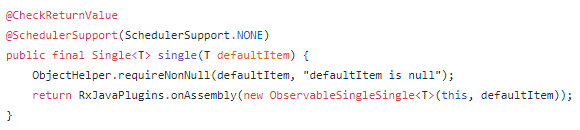
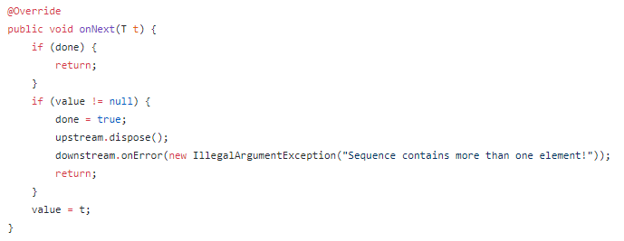
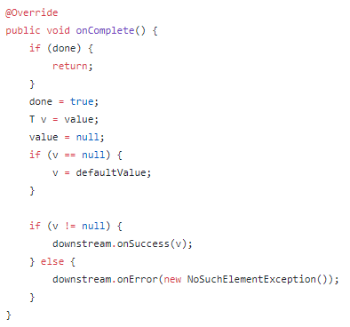
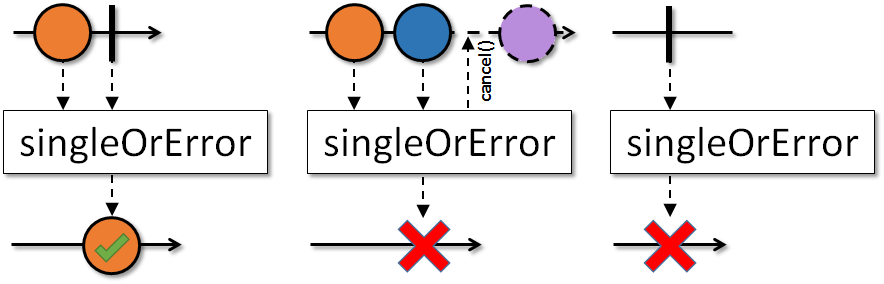
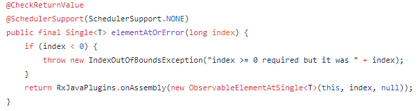
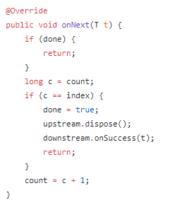
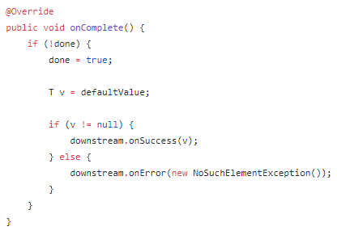
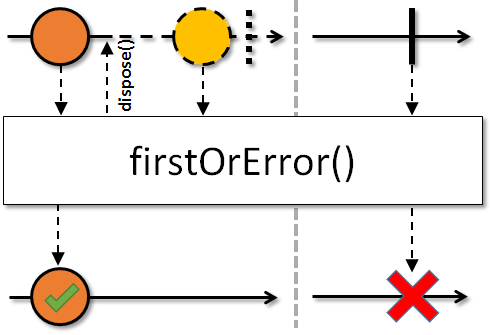
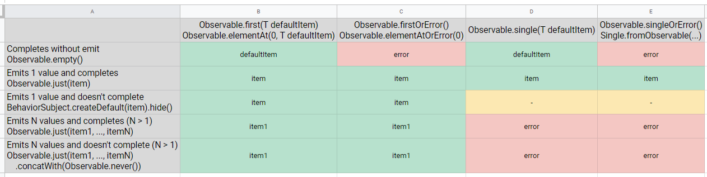

RxJava Observable to Single
Source: https://github.com/ReactiveX
Transforming Single to Observable is simple, as Single satisfies Observable’s contract. Just call single.toObservable() and you’re good. But transforming Observable to Single is not that simple: if it happens that Observable emits exactly one value and completes (or terminates with error without emitting values) then it is pretty straightforward, otherwise one need to set up some additional rules.
In RxJava there are a number of operators for transforming Observable to Single:
-
Observable.single(T defaultValue) / Observable.singleOrError()
-
Single.fromObservable(…)
-
Observable.elementAt(0, T defaultValue) / Observable.elementAtOrError(0)
-
Observable.first(T defaultValue) / Observable.firstOrError()
There are also toList() / toMap() / etc. methods, though they are out of scope in this article as with these operators everything is straightforward: after source Observable completed we just bundle all values into list/map.
This variety of operators is due to different strategies we can apply on Observable to transform it to Single. First thing that we note is that Single.onSuccess does two things — emits value and completes stream. In Observable there are two different callbacks: for emitting value Observable.onNext and for completing stream Observable.onComplete. That means that we can wait for onNext or onComplete to be called to understand whether we’re ready to call onSuccess. This is where the key idea about strategies comes from.
Let’s dive deeper and find out the difference and use cases.
Observable.single / Observable.singleOrError / Single.fromObservable⌗
If we look at implementation of these we’ll find out that they all use the same operator underneath: ObservableSingleSingle
Observable.single(T defaultItem)
So Single.fromObservable and Observable.singleOrError are equivalents. All three use same operator underneath, but Observable.single provides defaultItem while other two provide null as a defaultItem.
Let’s look inside ObservableSingleSingle to understand what it does. First let’s look at onNext:
ObservableSingleSingle.java onNext
Here is the following:
-
first check whether we’re done (either completed or error) or not. And if done then we ignore provided value.
-
then we check whether this is the first emitted item or not (inside we have field value which stores required single value). If this is the second emit, then we terminate with error (as Single can’t have two emitted items)
-
if value is null — which means this is first emit — we store it inside and do nothing else.
So you see that item wasn’t emitted to downstream in onNext, then it should be somewhere else. Let’s check onComplete:
ObservableSingleSingle.java onComplete
In onComplete:
-
as in onNext we check whether we’re done
-
we check whether our value is null (there was no emission from upstream) and if so we use defaultValue (remember, in singleOrError defaultValue is set as null)
-
then again we check whether our value is null. If value is not null, then we complete downstream with success otherwise with error (as there is no value to be emitted to single when upstream is completed)
To conclude, singleOrError() -like operators wait for upstream to complete and only then can emit success. If upstream Observable emits one value and not completes — singleOrError() won’t emit any value and will just wait.
If we take a look at marble diagram from documentation for example for singleOrError we’ll see exactly same:
singleOrError marble diagram
{kind=link}
Observable.first / Observable.firstOrError / Observable.elementAt / Observable.elementAtOrError⌗
First of all need to say that Observable.first(T defaultItem)just calls Observable.elementAt(0, T defaultItem) and Observable.firstOrError() just calls Observable.elementAtOrError(0). These are just operators with more human-readable names.
Base elementAt and elementAtOrError both use ObservableElementAtSingle:
Observable.elementAtOrError
As with single the difference between two methods is that one provides defaultItem and another provides null as default.
Looking inside onNext method of ObservableElementAtSingle we see the following:
ObservableElementAtSingle.java onNext
Here instead of saving value to be emitted, we store current index called count. And when count reaches requested index we dispose upstream and complete with success downstream single. So that means that elementAt-like operators don’t wait for upstream to complete and are more like eager version of transforming Observable to Single. If upstream Observable emits multiple values and even not completes — this operators will grab item on a requested position and complete downstream single with success.
Inside onComplete though it also does some work:
ObservableElementAtSingle.java onComplete
The only way we can get to onComplete is if upstream Observable not emit any value and completed (basically Observable.empty()). Here we check provided default value (remember for elementAtOrError default value is null) and if it is not null we complete with success otherwise with error as there is nothing to emit.
To conclude, elementAtOrError() -like operators do not wait for upstream to complete and emit success as soon as upstream provided them with a requested value. If upstream Observable emits one value and not completes — firstOrError() will complete with success.
And marble diagram for firstOrError:
firstOrError() marble diagram
{kind=link}
Conclusion⌗
To sum up there is an overview of behaviors of operators for given upstream Observables:
-
yellow means stream emits nothing but not closes — it just waits
-
green — that onSuccess was called (with name of the item emitted)
-
red — that onError was called

Also here one can see the tests.
Use these operators wisely, if you need more eager transforming and you are not interested in following emits — use first/firstOrError, if you want to have additional checks on upstream Observable (that it satisfies Single contract) then use single/singleOrError. But don’t forget that single/singleOrError might not complete if upstream Observable not completed.
Further when you’d like to find out what operators do, check the documentation, look at the source code and write some tests.
Happy coding!